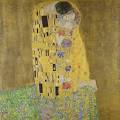
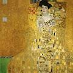
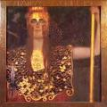
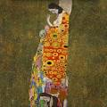
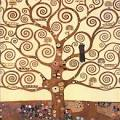

Adele Bloch-Bauer
Portrait of Adele Bloch-Bauer I (also called The Lady in Gold or The Woman in Gold) is a 1907 painting by Gustav Klimt. The first of two portraits Klimt painted of Bloch-Bauer, it has been referred to as the final and most fully representative work of his golden phase. It is on display at the Neue Galerie in New York City as part of the largest Klimt collection in the U.S.A.